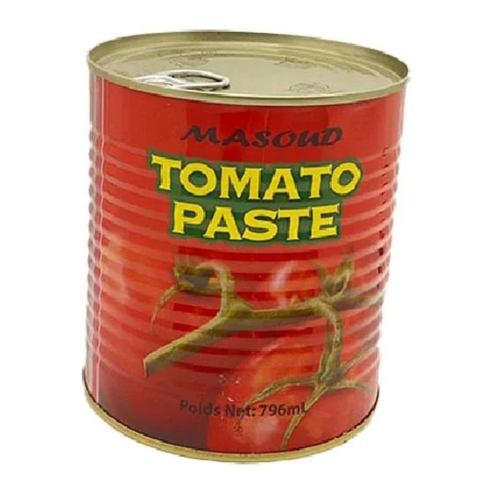

Farinhas
Pate De Tomato Masoud 400g
Farinha para massas tradicionais, mingaus e acompanhamentos.
Características
| Formato | 400g |
|---|---|
| Código de barras | 6950930624996 |
À venda na loja
3071 boulevard Portland, Sherbrooke. Disponibilidade conforme as chegadas.
Verificar disponibilidade: 819 239-9864
 Foto em breve
Foto em breve